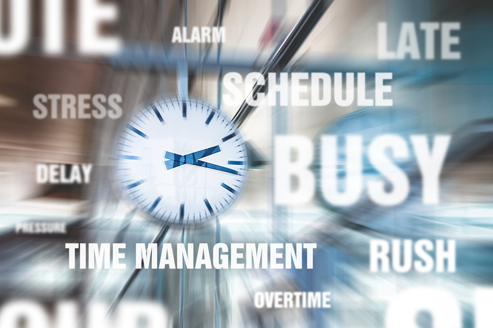

Boost Your Productivity with These Time Management Techniques
By: Hazel
Introduction
Time is the most valuable resource we have, and learning how to manage it effectively can have a profound impact on our productivity and overall well-being. In today's fast-paced world, many of us are constantly juggling multiple responsibilities and struggling to keep up with the demands of work and personal life. Fortunately, there are a variety of time management techniques that can help us make the most of our time and increase our productivity.
- "Become a Master of Your Time with These Simple Techniques"
- "Boost Your Performance: Time Management Tips and Strategies"
- "Streamline Your Day and Accomplish More with These Time Management Techniques"
- "Maximize Your Productivity: Tips for Effective Time Management"
- "Achieve More in Less Time: Techniques to Improve Your Time Management Skills"
- "Mastering the Art of Time Management: Effective Techniques That Work"
Research has shown that effective time management not only helps us get more done, but it can also have a positive impact on our mental health and well-being. By learning how to prioritize our tasks, set achievable goals, and eliminate distractions, we can reduce stress and avoid burnout.
In this section of the website, you will find a wealth of resources on time management, including expert advice, actionable tips, and real-life examples of individuals who have successfully improved their productivity through better time management. Whether you are a busy professional looking to streamline your workday, a student seeking to balance your academic and personal commitments, or anyone who simply wants to make the most of your time, these techniques can help you achieve your goals and enjoy a more fulfilling life.
ad space
1. Create a Schedule
Are you always running behind on your to-do list? Do you find yourself getting distracted easily and struggling to complete tasks on time? If so, it might be time to start focusing on productivity and time management techniques. The good news? Creating a schedule is an excellent way to start.
Creating a schedule is an essential tool for anyone looking to boost their productivity. Not only does it allow you to prioritize tasks, but it also helps you manage your time effectively so that you can complete everything on your to-do list. However, creating a schedule isn't about simply filling your day with tasks.
To create a schedule that works for you, it's essential to prioritize tasks based on their importance and deadline. By focusing on the most important tasks, you can ensure that you are spending your time on activities that will have the most significant impact. Additionally, by keeping track of deadlines, you can avoid last-minute rush jobs and ensure that you complete tasks on time.
One of the biggest mistakes people make when creating a schedule is trying to cram too much into one day. While it can be tempting to fill your schedule to the brim with tasks, this can actually have the opposite effect than intended. An overloaded schedule can be overwhelming, leading to burnout and a decrease in productivity. To avoid this, make sure to leave some space in your schedule for unexpected tasks or breaks to refresh your mind.
In conclusion, creating a schedule can be a game-changer for anybody looking to improve their productivity and time management skills. Remember to prioritize tasks, keep track of deadlines, and avoid overloading your schedule. With these tips, you'll be on your way to achieving your most productive self.
ad space
2. Prioritize Tasks
Do you ever feel overwhelmed by the number of tasks on your to-do list? Does the thought of everything you need to accomplish in a day leave you feeling drained and defeated? If so, you're not alone. Many people struggle with time management and prioritizing tasks, leading to decreased productivity and increased stress.
Prioritizing tasks is a crucial component of effective time management. By organizing your to-do list in order of importance, you can ensure that you're addressing the most critical items first. This not only helps you focus your energy where it's needed most but also ensures that you're making meaningful progress towards your goals.
So, how do you prioritize your tasks effectively? The key is to start by identifying your most important goals. These might be long-term objectives, such as completing a major project or hitting a sales target, or short-term goals, such as responding to urgent emails or completing a crucial phone call.
Once you've established your goals, take a critical look at your to-do list. Which tasks are directly contributing to those goals? Which tasks can wait until a later time? Which tasks can be delegated to others? Answering these questions will help you prioritize your tasks so that you're working on the most important items first.
Remember, effective time management isn't about doing more tasks—it's about doing the right tasks. By prioritizing your to-do list, you can ensure that you're making the most of your time, working towards your most important goals, and ultimately, boosting your productivity.
ad space
3. Break Tasks Down
Are you struggling to get things done? Do your days seem like never-ending lists of tasks? The reality is that time is finite, but the good news is that with the right time management techniques, you can make the most of it.
One technique that has proven effective is breaking tasks down into smaller, more manageable steps. By doing so, you can avoid feeling overwhelmed, while simultaneously ensuring that you're making progress towards your goals. So how exactly can you break tasks down effectively?
First, identify the key steps you need to take to complete the task. Then, break each step down into tasks that will take no more than 30 minutes to complete. This helps you stay focused and avoid getting bogged down in any one task. In addition, breaking tasks down in this way provides you with a clear roadmap to completing the larger project.
Another helpful tip is to prioritize your tasks based on urgency, importance, and difficulty. Tackling the most important and urgent tasks first will help get those big achievements under your belt and free up your mental bandwidth for other tasks. Once you have completed the most difficult tasks, it will be easier to tackle the less urgent ones.
Finally, be sure to take breaks when needed. When you've been working hard for several hours, it's important to take a break to recharge your batteries. Whether it's going for a walk, listening to music, or spending time with loved ones, taking a mental break can help you refocus and improve your productivity in the long run.
In conclusion, breaking tasks down into smaller, more manageable steps, prioritizing your tasks, and taking breaks when necessary can help you maximize your productivity and achieve your goals. So, start using these effective time management techniques today and watch your productivity soar!
ad space
4. Eliminate Distractions
In today's fast-paced world, it's not uncommon to feel overwhelmed by the amount of work that needs to be done. With numerous distractions vying for our attention, focusing on the task at hand can sometimes feel like an impossible feat. However, by implementing time management techniques, you can boost your productivity and break the cycle of procrastination.
One of the most effective time management techniques is to eliminate distractions. Studies have shown that it can take up to 25 minutes to refocus on the task at hand after being distracted, and that's not even accounting for the amount of time spent on the distraction itself. This can add up quickly, resulting in a significant loss of productivity.
There are many forms of distractions to eliminate, including digital and physical distractions. Digital distractions can include social media notifications, emails, and text messages, while physical distractions can include interruptions from coworkers, noisy environments, or even cluttered workspaces.
To eliminate digital distractions, consider turning off notifications on your phone or computer, and setting aside designated times to check your email and social media accounts. If possible, set your workspace up in a quiet location to minimize noise distractions. Additionally, decluttering your workspace can help you stay focused and avoid the temptation of getting sidetracked by unnecessary items.
Implementing these few simple strategies can transform your workday and help you achieve greater levels of productivity. Eliminating distractions may require discipline, but the benefits are worth it, resulting in increased focus, better time management, and ultimately, greater success.
ad space
Conclusion
As you wrap up your search for productivity solutions, we hope our time management techniques have provided you with valuable insights and tools. At this point, you may be feeling empowered to make a change in your work routine, feeling excited to see the results these techniques can bring.
The truth is, becoming more productive is a journey that requires commitment and discipline. As you pursue your goals, remember that setbacks are normal and can be overcome with perseverance. With that said, we want to remind you that the most important factor for success is your mindset. Believe in yourself and your ability to achieve greater things through hard work and smart time management.
Before you go, let's recap some of the key takeaways from our articles. You've learned that setting clear goals, prioritizing tasks, and embracing automation tools can free up your time and increase your output. You've also discovered the power of mindfulness and self-care in reducing stress and improving performance. Finally, you've seen examples of successful productivity habits from real-life high achievers.
While we've covered a lot of ground in our articles, keep in mind that productivity is a vast and evolving topic, with new techniques and tools emerging all the time. We encourage you to stay curious and never stop learning. Explore our website for more resources on productivity, personal development, and work-life balance.
At the end of the day, the greatest reward of becoming more productive is not only achieving more, but also enjoying more of life's experiences. We wish you all the best on your journey and look forward to hearing about your successes.
ad space